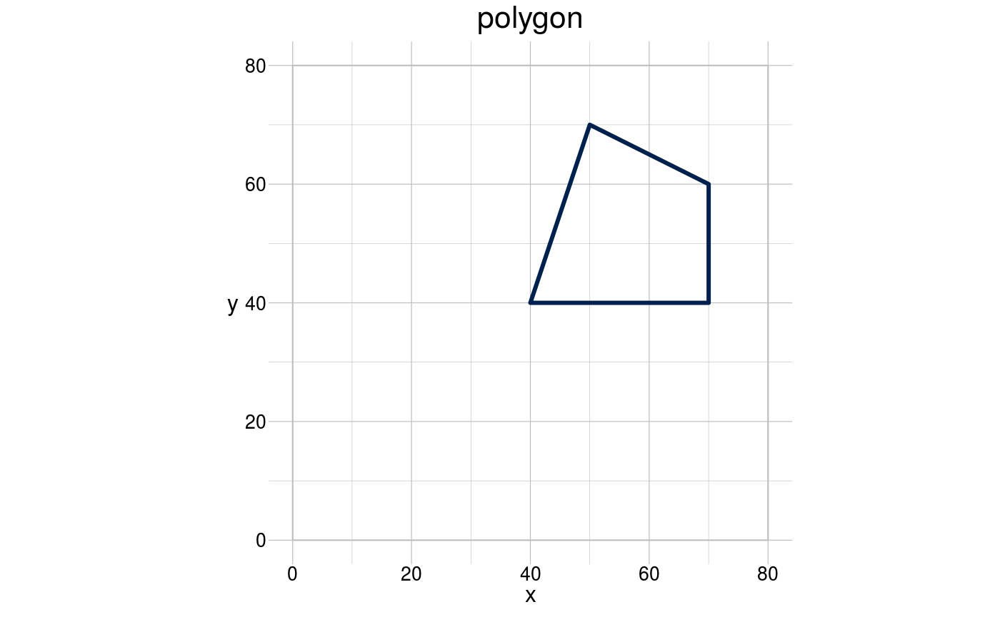
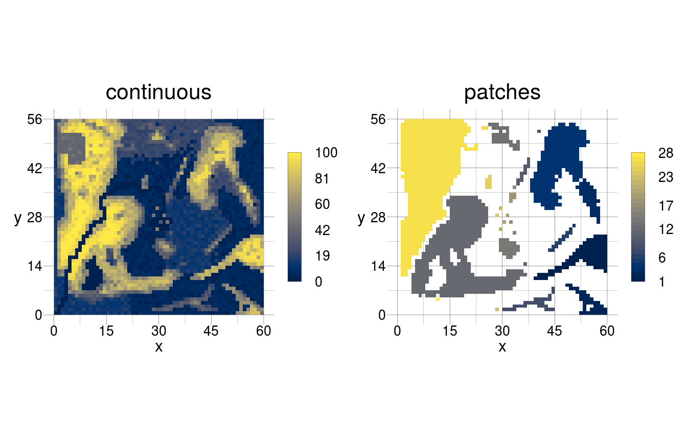

vignettes/introduction.Rmd
introduction.RmdYou might find rasterTools useful when your work depends in one way or the other on earth observation data (Bush et al. 2017). This may be for simulating spatial patterns, building species distribution models or analysing and measuring spatial patterns/landscape features.
rasterTools does NOT intend to replace raster (Hijmans 2017) but tries to present an additional workflow that is aimed at being more transparent and reproducible and easily accessible. Many of the typical steps in working with raster data are summarised into operators (functions that carry out a specific spatial operation) and are grouped according to the group of tasks. In rasterTools the four functions obtain(), generate(), modify() and measure() represent the major tasks of spatial operations. rasterTools has been conceptualised so that these core functions are modular. Each of these functions manages all the code-logic that is common for the task at hand, e.g. to obtain datasets. More specific code that manages, for instance, “loading the MODIS dataset” is oursourced to a seperate function (the oMODIS() operator). New operators to all the core functions and to loadData() can hence be devised easily.
Several operators are combined to algorithms to carry out (a sequence of) more complex spatial operations. Operators are scope specific, i.e. they are typically only called in their respective core function. An algorithm in rasterTools is given as list of lists.
algo_name <- list(list(operator1),
list(operator2))
Each operator represents a do.call() compliant definition (type ?do.call into the console to learn about it).
do.call(what, args, quote = FALSE, envir = parent.frame())Which translates to
algo_name <- list(operator1 = list(what, args),
operator2 = list(what, args))Its first element what = operator_name would outline the name of the function utilized in this operator (such as "oMODIS" or "oCLC"). Its second element (args) can have any number of arguments required to put together the call (such as product = "MOD17A3", layer = 2, period = c(2012, 2014) or simply period = 2006).
datasets <- list(list(operator = "oCLC", period = 2006),
list(operator = "oGFC", period = c(2005:2007)))This modularity is one of the strong sides of rasterTools. It allows the user to write their own operator to be used in the respective core-function. An example would be a dataset that is not yet supported by rasterTools, to utilize a modification which is not yet included in this package or to develop new landscape metrics. All of this can easily and seamlessly be combined with the previously defined operators in the same, simple workflow.
geom
rasterTools comes with its own (spatial) S4 class. This class is radically simplified (even in comparison to sf) and thus consists only of the feature classes point, line and polygon. It does, however, come with many functions that create specific types of lines or polygons, for instance geomHexagon(), which creates exclusively hexagonal polygon geometries.
These geometries are deliberately per default not spatial in nature and do also work within an ordinary cartesian coordinate system. They can be transformed into a spatial object by assigning a coordinate reference system. We learn a lot about them by simply creating and plotting one:
library(raster)
#> Loading required package: sp
library(rasterTools)
#> Hi, I am rasterTools 0.6 and I help you with your spatial data!
coords <- data.frame(x = c(40, 70, 70, 50),
y = c(40, 40, 60, 70),
id = 1)
window <- data.frame(x = c(0, 80),
y = c(0, 80))
(aGeom <- geomPolygon(anchor = coords, window = window, show = TRUE))
#> class : geom
#> type : polygon
#> features : 1 (4 vertices)
#> window : 0, 80, 0, 80 (xmin, xmax, ymin, ymax)
#> extent : 40, 70, 40, 70 (xmin, xmax, ymin, ymax)
#> scale : absolute
#> crs : NA
#> attributes : 2 (id, n)The main feature of this sort of “spatial” class is that it can be created relatively simply by providing a set of coordinates as socalled anchor values. It has a new slot, window, which defines the frame within which it would be plotted. A wide range of “getters” and “setters” (for example getExtent() or setCRS()) have been defined as methods for geom and other spatial classes, in the latter case they are mostly a simple wrapper of the original raster, sp or sf funciton. The foreign methods have been defined for the sake of internal consistency and simplification.
Additionally, several “tools” to modify the geom vertices and to transform the geom to and from other spatial classes have been programmed (for example gRotate() or gToSp()) and this will be extended in the future.
In the following you will find an example for each of the core functions.
rasterTools may write large files to your harddisc and you should assign a specific directory on a storage medium that has sufficient space via updatePaths(root = "/path/to/the/spatial/files").
An algorithm with which one would obtain information from various spatial data sets could be:
myDatasets <- list(list(operator = "oGFC", period = c(2006)),
list(operator = "oMODIS", product = "mod17a3", period = 2006,
layer = 2))Most of the different spatial datasets are available in a specific file format and may have other specific properties, which require consideration. For instance, MODIS data are stored as products with several layers within each file. Consequently the product and layer need to be specified. Each of the required arguments can be found in the respective documentation, for instance with ?oMODIS.
Typically we only need a (vastly) smaller subset of an earth observation dataset and we would want to use a rectangular mask (of the class geom) to outline this area of interest:
library(magrittr)
#>
#> Attaching package: 'magrittr'
#> The following object is masked from 'package:raster':
#>
#> extract
myMask <- loadData(files = "aWindow.csv",
localPath = system.file("csv", package="rasterTools")) %>%
geomRectangle() %>%
setCRS(crs = projs$laea)The collection of datasets for the area of our interest can be obtained by the following code:
myData <- obtain(data = myDatasets, mask = myMask)(output here not shown as it may download the datasets, if you do not have them yet)
A typical modification algorithm determines patches of the foreground in a raster with continuous integer values:
get_patches <- list(list(operator = "rBinarise", thresh = 30),
list(operator = "rPatches"))When using this algorithm in modify() while sequential = TRUE the binarised raster will be used to derive patches. The output of rBinarise will be passed to rPatches, which determines patches from the thresholded rasters values.
However, if you want to determine patches, but also derive categories from the original raster, you have to give each function in the algorithm a specific name. Functions which should be part of the same sub-algorithm have to have the same name:
cc_cats <- list(get_patches = list(operator = "rBinarise", thresh = 30),
get_patches = list(operator = "rPatches"),
get_categories = list(operator = "rCategorise", n = 5))In this case sequential = TRUE would be ignored globally, but applied locally for those functions that share the same name (also if it would be set to FALSE in the call).
The modifications would be carried out by:
myInput <- rtData$continuous
myPatches <- modify(input = myInput, by = get_patches, sequential = TRUE)
visualise(raster::stack(myInput, myPatches))
Landscape metrics are another case of algorithms in rasterTools. We distinguish between generic and derived landscape metrics. To evaluate a generic metric typically just the respective operator with its arguments needs to be given:
myInput <- rtData$categorical
myMetrics <- list(a_c = list(operator = "mArea", scale = "class"),
a_l = list(operator = "mArea", scale = "landscape"))
measure(input = myInput, with = myMetrics)
#> $a_c
#> class result
#> 1 1 37
#> 2 11 104
#> 3 21 281
#> 4 24 507
#> 5 27 466
#> 6 31 407
#> 7 41 561
#> 8 44 453
#> 9 47 544
#>
#> $a_l
#> landscape result
#> 1 1 3360The so defined terms are the basis for derived metrics. Such a metric is defined simply by its mathematical equation, for example the Class proportional area is the class areas divided by the landscape area:
myMetric <- list(a_l = list(operator = "mArea", scale = "landscape"),
a_c = list(operator = "mArea", scale = "class"),
mCPA = "a_c / a_l * 100")Several derived metrics can be defined in one algorithm, given the required terms are defined:
myMetrics <- list(a_p = list(operator = "mArea", scale = "patch"),
a_c = list(operator = "mArea", scale = "class"),
a_l = list(operator = "mArea", scale = "landscape"),
mCPA = "a_c / a_l * 100",
mLPI = "max(a_p) / a_l * 100")The generic metrics mNumber(), mPerimeter(), mArea(), mAdjacency() and mValues() are available. Equations for the derived metrics can be found in the landscape metrics vignette (and with increasing version numbers more of them, for example the largest patch index mLPI or the percentage of like adjacencies mPLA). It becomes apparent that also new, possibly improved landscapes metrics can be easily prototyped and tested in this framework.
Finally, the measurement of the class proportional area and the largest patch index, in a raster where patches have been determined, would be carried out by:
measure(input = myInput, with = myMetrics)
#> [[1]]
#> class mCPA
#> 1 1 1.10
#> 2 11 3.10
#> 3 21 8.36
#> 4 24 15.09
#> 5 27 13.87
#> 6 31 12.11
#> 7 41 16.70
#> 8 44 13.48
#> 9 47 16.19
#>
#> [[2]]
#> landscape mLPI
#> 1 1 8.81I am grateful for financial support from the PROFOUND Cost-action, which gave me the opportunity to work in a concentrated effort a large part of the functionality. This package has been developed in support of the FunBo Project, which was made possible by the Grünewald-Zuberbier Scholarship handed out by the University of Freiburg.
Thanks are also due to Prof. Arne Pommerening who was a great source of inspiration for what rasterTools is now.
Bush, Alex, Rahel Sollmann, Andreas Wilting, Kristine Bohmann, Beth Cole, Heiko Balzter, Christopher Martius, et al. 2017. “Connecting Earth Observation to High-Throughput Biodiversity Data.” Nature Ecology & Evolution 1 (7): 0176. doi:10.1038/s41559-017-0176.
Hijmans, Robert J. 2017. Raster: Geographic Data Analysis and Modeling. https://CRAN.R-project.org/package=raster.